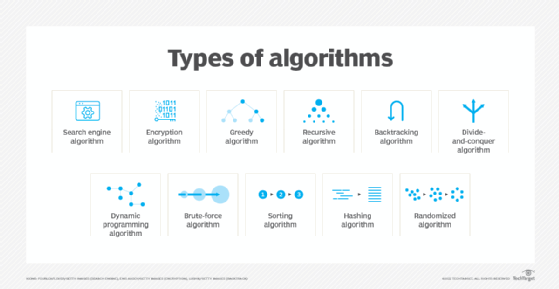
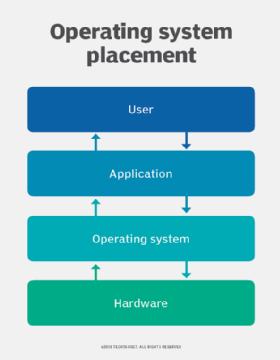

I presented Blink-It as my final project in the Wearable Technology course, which aimed at
addressing safety concerns for bikers in Madison, where many people prefer biking as their mode
of transportation.
Blink-It is a bike safety vest that incorporates wearable technology, featuring a remote control
that uses infrared technology to communicate with a microcontroller in the vest to activate
blinkers. The accelerometer data is used to trigger the brake lights when I am decelerating,
ensuring safety for myself and those around me.
I worked collaboratively with my classmates to develop Blink-It, learning valuable skills along
the way, such as creating circuits using sewable threading and programming Arduino circuits. Our
teamwork and collaboration were critical to the project's success, providing an innovative and
practical solution to the safety concerns of bikers in Madison.
Computer Science 200,300 and 400
Throughout the course, I developed both basic and advanced Java programming skills, including
object-oriented programming, inheritance, polymorphism, and exception handling.
I gained proficiency in various data structures, such as linked lists, arrays, 2D arrays, hash
tables, and binary search trees. These data structures are fundamental to software development
and are essential for efficient and effective data management.
I also studied different algorithms, such as Dijkstra's shortest path and minimum spanning tree.
These algorithms are crucial in solving complex problems and are essential for developing
efficient and optimal software solutions. By studying and applying these algorithms, I learned
how to optimize code and streamline software development processes.

Algorithms
As part of my coursework, I studied and applied various complex algorithms, including greedy,
recursive, dynamic programming, and divide and conquer. These algorithms are essential to
developing efficient software solutions to complex problems.
I learned how to analyze and optimize the time and space complexity of algorithms by studying
their computational complexity and big-O notation. By mastering these concepts, I was able to
develop more efficient algorithms and improve the performance of existing algorithms.
Throughout the course, I completed proofs to demonstrate the correctness and efficiency of the
algorithms I developed. This helped me to refine my problem-solving skills and develop a deeper
understanding of the principles of algorithm design.
By mastering these advanced Java skills, data structures, and algorithms, I am well-equipped to
tackle complex software development challenges and contribute to the development of innovative
software solutions.

Operating Systems
Learned about fundamental concepts in operating systems such as process and thread
synchronization, file systems, memory management, virtualization, threading locks, concurrency,
and job scheduling.
Developed practical skills in operating system design by designing and implementing system
libraries and kernel calls, which are mechanisms provided to users for accessing and developing
new operating system functionality. This hands-on experience allowed for a deeper understanding
of operating system concepts and their practical applications.
Learned how to assess system performance and optimize operating systems using algorithms and
data structures. This involved analyzing the impact of various algorithms and data structures on
the complex operation of an operating system and implementing optimizations to improve
performance.
Completed programming assignments and projects that reinforced concepts learned in the course,
such as implementing a basic file system or developing a virtual memory manager. These
assignments provided practical experience in applying operating system concepts and developing
practical skills in areas such as threading locks, concurrency, and job scheduling.
Artificial Intelligence
Studied both Java and Python programming languages, mastering data structures and algorithms in
both.
Learned a variety of search methods, including uninformed and informed search algorithms, as
well as algorithms for unsupervised learning.
Developed a 2D convolution neural network using Python, gaining valuable experience in deep
learning and image analysis.
Completed programming assignments and projects, applying concepts learned in class and
developing a deep understanding of the principles and applications of search methods, machine
learning, and neural networks.